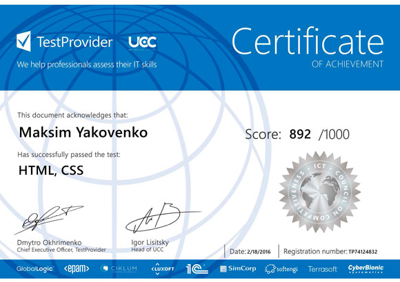

Професійні навички
- Практичні навички HTML, CSS, JavaScript, JQuery (6 місяців)
- Bootstrap - Створення адаптивних сторінок
- Git
Навчання:
- JavaScript Essential (НЦ - СyberBionic Systematics)
- Javascript Advanced, JQuery, CSS Фреймворк Bootstrap 3 (On-line портал ITVDN.com)
- JavaScript. Подробное руководство - Дэвид Флэнаган
- On-line HTML, CSS курс - HTMLAcademy.ru



Досвід роботи:
09.2010 - поточний час
Посада: Бухгалтер
Обов'язки: Проведення виплат у системі клієнт-банк. Контролювання Дт/Кт заборгованості. Виплата заробітньої плати.